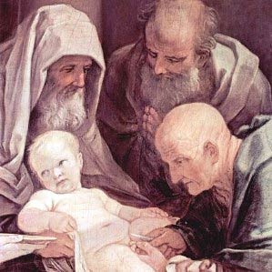

АБСОЛЮТ
«Одно кончилось, другое ещё не началось. ...
Только, когда вы выключаетесь из времени,
вы подобны Богам. Вы соединяетесь
с божественным абсолютом».
Паола Волкова
Какое счастье, какой восторг неожиданно встретить единомышленника в том, о чём размышляла всю жизнь. В чём пыталась убедить окружающих, близких и не близких, а они скользили по твоему лицу непонимающим взглядом и кивали головой, как бы соглашаясь, а на самом деле, лишь бы отвязалась...
Речь идёт о встрече Нового года, которая происходит каждые 365 дней (366 - если год високосный), в ночь с 31 декабря на 1 января по григорианскому и юлианскому календарям.
В «наше время», то есть в советское время, Новый год был любимым праздником. Мы не думали о том, что это единственный неполитический праздник. Просто этот праздник был особенный. Я бы сказала «сакральный», хотя в детстве я этого слова ещё не знала. А Новый год был окрашен в изумительные цвета: белоснежный, густо зелёный, и он искрился, сверкал. Он умопомрачительно пах внесённой с мороза в тёплую комнату сосной. Он сулил гостей, застолье, подарки, скорый день рождения. Да, что там говорить, он обещал новое счастье! Явственно ощущалось продвижение куда - то вперёд, в будущее. И оно, это будущее, конечно же, будет ещё более светло и прекрасно, чем настоящее.
Новогодние праздники сопровождались исполненным смысла ритуалом. Выпивать начинали часов в одиннадцать - прощались со старым годом. Благодарили его, если он был благополучным, торопили уйти, если в году случались неудачи: «Пусть уходит! Пусть все неприятности останутся в прошлом!» «Ну, случилось, случилось... Но, в целом, все живы, и, слава Богу». Вероятно, сходные чувства владели пещерными жителями, исполняющими свои магические обряды у костра в каком - нибудь мезолите. Уязвимость перед лицом природы, произвол с которым случай вершит свой выбор, оставляют заклинания единственной доступной человеку страховкой. И в этом смысле со времён мезолита мало что изменилось.
Засим следовал этап выяснения, с каким ударом часов - первым? последним? - наступает новое время. По этому вопросу мнения всегда разделялись. Я до сих пор не знаю, с каким же? Хотя это важно.
И вот, наконец, наступает Новый год. На телевизионном экране куранты Спасской башни бьют двенадцать раз. В детстве, помню, бой курантов раздавался из включенной на полную громкость пластмассовой коробочки радио. Хлопают пробки, звенят бокалы, пенится шампанское... Опять звучат пожелания - из года в год один традиционный набор, неизменный церемониал: «С Новым годом, с новым счастьем!», «Чтоб не хуже!», «За всё хорошее!», «Чтоб все были живы - здоровы». Мужья целуют жён, родители детей... Глаза затуманиваются, на лицах растроганные улыбки: все смутно чувствуют, что в эти минуты имеют дело с категорией нешуточной - со Временем. Что, может быть, на одно мгновение происходит его остановка, «обнуление», после которого начинается новый отсчёт. Что в этот миг происходит приобщение к величинам глобальным, космическим. Проносятся мысли о бренности, о быстротечности... Возникают импульсы всеобщей любви и всепрощения.
Следующие за этим фразы и реплики тоже, по большей части, традиционные, переходящие из года в год, из поколения в поколение. Например, у меня в Крыму хорошим тоном было похвалить действительно отменное шампанское, сказать: «Ну, конечно, это же Новый свет, брют. Его из Голицинских подвалов поставляют ко двору английской королевы». Правда, потом оказалось, что у нашего шампанского не было юридического права называться шампанским. Но всё равно: «Английская королева плохого не закажет».
В соответствии с поверьем «Как Новый год встретишь, так его и проведёшь» старались собраться всей семьёй, приглашали любимых друзей. Столы ломились. В новогодний вечер хотелось создать возвышенную, романтичную атмосферу. Ёлка мигала цветными огоньками, горели свечи. Я вечно выдумывала чего - нибудь, эдакое. Однажды, во время боя курантов мы с друзьями, стоя вокруг накрытого стола, зажгли бенгальские огни. Свет был погашен, огни замечательно искрились и потрескивали, а мы чертили ими в воздухе загадочные светящиеся фигуры. Было красиво. Когда включили свет, наступило изумлённое молчание. Сгоревшие опилки бенгальских огней чёрным слоем устлали все яства. Но неожиданный эффект почти не испортил праздничного настроения. Мы были молоды тогда.
По мере взросления, смена лет происходила всё чаще. Сейчас, в старости, не успеешь посуду вымыть после встречи очередного нового года, как нужно уже сервировать стол к следующему. А после переезда в Израиль время несётся вскачь. Говорят, это ощущение появляется из-за близости к экватору. Интересно. Загадочно. Однако новогодние праздники по-прежнему остаются любимыми.
***
Первыми посягнули на мой Новый год господа христиане. Аня, студентка-славистка из Германии, которой мы в трудные девяностые годы сдавали комнату в коммуналке (плюс завтрак) за 80 долларов в месяц, заявила нам, что настоящий праздник Рождество, а вовсе не Новый год. Она сказала, что на праздник съезжается вся её семья, хотя отец директор гимназии, и семья не религиозна. Дом украшают гирляндами, устанавливают ёлку, дарят подарки и всевозможных зайцев: шоколадных и глазурованных - символ протестантского Рождества.
«А как же смена одного года другим, - спросила я? - А, это неинтересно! Это для учреждений, для бухгалтеров, для отсчёта студенческих семестров» - пожала плечиками Аня. «Вот он каков, цивилизованный взгляд на мир, - подумала я. Вот что празднует Европа. А мы зашоренные, и праздники у нас неправильные». Но за Новый год стало обидно.
С наступлением перестройки и у нас 7 января начали отмечать православное Рождество Христово. Как раз через неделю после Нового года, который, конечно же, в постсоветском пространстве праздновать не перестали, и, думаю, не перестанут ещё долго, может быть, и никогда. Святое Рождество отмечают с любовью, со службами в соборах, с колокольным звоном. А потом, 13-го, опять же Старый Новый год - то, что иностранцы уяснить просто не в состоянии - я свидетель. Они на все объяснения говорят: «Но вы же уже отметили Новый год. Зачем же ещё раз? «Зэ лё яхоль лехьёт» («Этого не может быть» - иврит) Не понимают.
Для нас с мужем Старый Новый год несколько десятков лет был очень актуален. В детском театре, где мы работали, 1-го января, каждого нового года в 10 часов утра, в фойе у ёлки начиналась праздничная массовка. За ней следовал спектакль. Муж мой, обладая красивым баритоном, умением широко и свободно общаться со зрителями, был пожизненно Дедом Морозом. Снегурочки менялись.
Я была сценаристом и, отчасти, организатором праздника. Встречая накануне Новый год, мы помнили о том, что утром рано вставать и нужно быть в форме. Муж относился к делу серьёзно и только грим накладывал не менее часа. Чуть меньше времени занимало облачение в шикарный наряд, который театральные художники расписывали золотыми и серебряными узорами, усыпали «драгоценными каменьями». И вот со словами, произносимыми на низких, рокочущих тонах:
«Шёл я к вам, ребята, долго.
Был в Сибири и на Волге
На Урале, на Камчатке
Вот и к вам пришёл, ребятки!» и так далее...
(автор стихов неизвестен), он представал перед множеством совершенно искренне счастливых, хохочущих рожиц, перед коими халтурить было бы немыслимо. Дед Мороз шёл по кругу, а дети протягивали ручонки, пытаясь коснуться его «волшебной» одежды.
Новогодние праздники и следующие за ними школьные каникулы были «хлебным» временем для всех театров. А когда каникулы заканчивались, артисты получали отгулы, тут и наступал Старый Новый год. И для всех «театральных», «цирковых», «концертных» он был желанным и долгожданным. Это традиция мало кому известна.
***
У евреев, на Земле обетованной свой календарь. Новый год отмечают в новолуние осеннего месяца тишрей, что приходится на сентябрь или октябрь. Событие, от которого мудрые евреи ведут отсчёт, не могу не согласиться, грандиозное: сотворение Адама и Хавы. Время иудеи указывают точное: в 2013-м году 5774-й год от сотворения первых людей. Акт творения становится конкретным и неоспоримым. Я, узнав об этом впервые, поразилась этой определённости. Весь мир рефлексирует, полемизирует: - Бог есть? Бога нет? - а тут просто отмечают 5774-й год от создания Богом человека. Спорьте себе.
Но еврейский Рош - а - Шана («Голова года» - иврит) не заменил мне «моего», настоящего Нового года. Наоборот, я почувствовала его трогательную беззащитность, недоказуемость и, может быть, именно поэтому, его метафизическую красоту.
***
В Израиле существуют два нарратива празднования «моего» Нового года.
Один с пренебрежением высказала хозяйка нашей съёмной квартиры, чиновница министерства образования.
«Что такое Новый год, чтобы его праздновать? - спросила она, - День, когда Христу сделали обрезание?»
Я, не очень сведущая в этих вопросах, напряглась и сообразила, что от 25 -го декабря, католического Рождества, до конца года как раз восемь дней. Именно на восьмой день новорожденным иудеям делают обрезание, что является одним из главных знаков иудейской исключительности. Этот ритуал связует младенца с Единым, Совершенным и Всемогущим, чьё имя не произносится. И, значит, точно, маленькому иудею Иегошуа сделали обрезание 31-го декабря. Ведь, если плотник Иосиф не мог оспорить Высокое отцовство родившегося ребёнка, то мать его, Мария, уж точно была еврейкой.
«Может вы и в Израиль переехали, чтобы праздновать обрезание Христа? - язвительно продолжала хозяйка. - А, если не так, - она заметила мою попытку возразить, - то Новый год вообще не имеет смысла. Клюм («ничего» - иврит), пустота».
Доискиваясь до сути вопроса, я нашла в евангелиях от Луки строки: «По прошествии восьми дней, когда надлежало обрезать Младенца, дали ему имя Иисус, наречённое Ангелом прежде зачатия его во чреве» (Лука., гл.2, ст.21) Оказалось действительно, и в католической и в православной традиции обрезание младенца Христа числится, как явление значительное, как праздник. Интересно, почему братья - христиане не особенно акцентируют это событие? /Фрагмент фрески «Обрезание Христа. Художник Гвидо Рени, 1635 г. Сиена, церковь Сан Мартино/
Но мой - то Новый год означал нечто совершенно иное. Тем более, что наш разговор с хозяйкой происходил 31-го декабря 1999-го года. День, когда завершается год, столетие и тысячелетие! Пережить такую дату - удача ли? - не знаю, но определённо избранничество! И я была искренне взволнована, ожидая наступления невообразимого совпадения времён.
Тут обнаружился второй вариант неприятия иудеями новогоднего праздника. Он прозвучал из уст зеленщика, религиозного человека, чья лавка располагалась против нашего дома. С трудом вспоминая русские слова - видно было, что он в Израиле годов с семидесятых, и своей памятью русского гордится, он сказал: «Сильвестр - лё тов («не хорошо» - иврит) для еврея!» И неколебимая убеждённость звучала в его словах. Я слышала уже, что Новый год в Израиле называют «Сильвестр». Имя звучное, но кто он такой, Сильвестр, и почему «лё тов»?
Оказывается, 31-го декабря христиане отмечают День святого Сильвестра II - папы начала 4-го века, времени становления христианства как государственной религии Рима. Сильвестр был страшный юдофоб. Он ратовал за полный разрыв христианства с иудаизмом и спровоцировал погром, во время которого в Тибре были утоплены сотни евреев. Как же можно после этого отмечать день ненавистного клирика? Даром, что этот день приурочен к его смерти. Жалкие оправдания.
К счастью, секуляризация Израиля в угоду её величества, прибыли, проистекала стремительно. В 1998-м году в моём городе один - единственный хозяин выложил в своём магазинчике скромную витрину ёлочных игрушек. А сегодня шесть этажей центральной автостанции Тель-Авива отведены под, невиданных размеров, ёлочный базар.
И за Новогоднюю ночь с 1999-го на 2000 год я опасалась напрасно. Так же, как на главных площадях всех столиц, множество людей собралось на площади перед мэрией Тель - Авива. Небо расцветили фейерверки, лилось шампанское и было всё как полагается.
Но даже не это главное. В конце концов, никто не мешает мне отмечать смену одного года другим так, как я привыкла. Мои бывшие соотечественники, ставшие моими новыми соотечественниками, и не думают отказываться от любимого праздника. С течением времени новогодняя ночь становится всё более шумной, по крайней мере, в моём городе, где четверть населения «русские» евреи. И, тем не менее, встреча Нового года носит в Израиле оттенок маргинальности.
А жаль. Потому что этот праздник может быть равноправным и важным для всех, без исключения. Потому что это праздник философский, транснациональный, католический (всеобщий) - в первоначальном смысле этого слова.
Не будучи запредельно наивной, я действительно испытала огромную радость, встретив человека, чьи размышления по этому вопросу совпали с моими.
И не важно, что я живу в Израиле, а среда его обитания - Южная Америка, Аргентина.
Что на мою долю приходится вторая половина ХХ-го - начало ХХI-го века, а он родился в 1899 -м, а умер в 1989-м году.
Что я практически никто рядом с вселенской славой, которой он заслуженно увенчан.
Его имя Луис Хорхе Борхес, и вот что он пишет:
КОНЕЦ ГОДА
Не символическая
смена цифр,
не жалкий троп,
связующий два мига,
не завершенье оборота звёзд
взрывают тривиальность этой ночи
и заставляют ждать
тех роковых двенадцати ударов.
Причина здесь иная:
Всеобщая и смутная догадка
О тайне Времени,
Смятенье перед чудом -
Наперекор превратностям судьбы
и вопреки тому, что мы лишь капли
неверной Гераклитовой реки,
в нас остаётся нечто
незыблемое.
***
Амен...
Виктория Куренкова
Израиль,
Ришон ле-Цион, май, 2013год